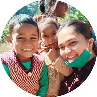

Himansha Bisht
Saket Colony, Nakuchiatal Road •Nainital, UK 263136
Cell: (+91) 7055866505
Email:himanegi01@gmail.com
I have worked in capacity building, community mobilization, project planning, strategy, as well as documentation in the social sector. All my experience has been on project sites in interior villages of Kumoun and Garhwal region of Uttarakhand. I have gained experience by working at the grassroot level, with efficient communication, coordinating and working together with the community and management committees
SOCIAL SECTOR EXPERIENCE
Mount Valley Development Association
Work Site – Doni, Tehri Garhwal
Project Details - UN Environment-GEF funded project on “Mainstreaming agricultural biodiversity conservation and utilization in agricultural sectors to ensure ecosystem services and reduce vulnerability”
- Reporting and Documentation
- Coordinating along with field staff and implementing activities mandate for farmer’s fields
- Project planning and activity implementation in coordination with the Program head.
- Strategizing and Project Planning
- Annual Report and various promotional tool Designing.
- Manage and handle social media platforms of the organization.
- Proposal and concept note designing and writing.
- Marketing and branding of the value added products of the organization led women federation
- Coordinating with agricultural institutions to facilitate technicality into the field.
- Data Analysis, designing and presentation.
Sanjeevani VikasEvam Jan KalyanSamiti
Work Site – Nail, Syaldey Block
Project Details-SBI Gram Seva Program is being implemented where the community needs are objectively assessed through “Integrated Community Development Approach” through Gram Panchayat.
- Promoting education for all in each villages.
- Environment protection and creation of symbiotic relation.
- • To sustain and develop the natural systems of livelihood
- • Integration of developmental activities through digitization in Gram Panchayat
- • Skill development for all season employment opportunities.
- • Improvement of preventive and primary healthcare in villages.
Social Worker ( November 2017 to November 2018)
- Formation of the Community Based Organization in the concerned villages.
- Community mobilization and various awareness program to link villagers with government schemes such as SWAJAL (for sanitation), Pension Schemes, health and hygiene programmes etc.
- Regular monitoring and implementation of various tools to upgrade the Remedial classes for the kids. Remedial classes focuses on the overall as well as weak phase of the kids.
- Conducting cleanliness drives and educating women and children during monthly meetings.
- Conducting and participating in CBO’s monthly meeting.
- Documentation of reports and data for all villages.
- Conducting plantation activity in villages.
- Renovation work for schools and community buildings.
- Conducted water and baseline surveys with the team.
- Presentation as well as representing the team for SBI Gram Seva.
- I also have received an opportunity to participate on Fair Climate Network training programme by Ram Esteev at Bagepalli, Bangalore. The project deals in controlling carbon emission by providing smart chullahs and replacing traditional ones.
Central Himalayan Rural Action Group
Work Site:Kathpuriachena, Bageshwar
Project Details:Maximizing Mountain Agriculture Project (MMAP) - To improve the quality of life and income from agriculture for farming families in selected villages in a cluster of selected area.
Trainee Document Specialist(May to October 2017)
- Handled the documentation for the funders for the project.
- Proper filling of the data and looking after the implementation of the project guidelines.
- Participation on CBO’s (Community Based Organisation) meetings on monthly basis such as Self Help Group, Gram Committee etc..
- 13 villages were under the project site.
- Communicating and encouraging farmers and villagers to adopt new methods and varieties of (Paddy, Wheat, Onion and Pulses).
- Picture documentation was also a crucial part of the working.
- I also looked other project running in the same area for Forest conservation (Vaniki Project), spring recharge (awareness of clean water and recharging the water for the natural souces) and education related programmes.
- Participation on planning and execution meetings.
- Participartion in trainings conducted by Vivekanand Krishi Anusandhan Kendra, Almora and also participated in Kisan Fairs.
BUSINESS DEVELOPMENT & RELATIONSHIP MANAGEMENT
Versatile, resourceful and multi-talented bsiness Professional combining rogressive experience in market research and analysis, client relations, and sales. Highly motivated performer, with well-developed analytical and problem solving skills.
- Relationship Management.
- Project Management.
- Cold Calling.
- Marketing Initiatives.
- Consultative Services.
- Communications Skills.
- Proposal Development.
- Sales Presentations.
Global Rhymes Dehradun, Uttarakhand
Research Specialist Consultant, USA
(March 2014 to July 2015)
- Help my recruiters find hard to get candidates
- Build a larger pipeline for my recruiters
- Lower overall talent acquisition costs
- Provide industry/competitive research
- Build a solid sourcing infrastructure
- Search for candidates using Boolean strings, Root Word, and Stem Word searches
- Maintain customer service for both recruiting candidates and clients
- Worked with esteemed clients such as Johnson & Johnson, WorldPay, Sysmex, LenderLive, LiveIntent, BlueSnap and Coface.
BLB Commodities, New Delhi
Research Trainee Export-Import
- Inside sales, calling clients from Africa, Saudi Arabia, Dubai, Iran, Qatar and Oman.
- Cold calling to generate warm / cold leads.
- Extensive research on markets for rice and pulses in order to contact clients.
- Coordinated between Managing Director and Sales Managers.
TRAININGS & PROJECTS UNDERTAKEN
-
Internship at : Indian Oil Cooperation Ltd, Barilley (40 days)
-
Title Description: Retail Automation on RO’s and Market survey from customer and dealer perspective.
-
In between my semesters, I did major projects on Hydrogen Fuel Cell and Its Market Survey, commercial advertisements on Red Bull and Save Energy.
Dissertation research on ''CARBON FOOTPRINT OF AFFLUENT AREAS OF DEHRADUN”.
SKILLS
-
Proficient in “Proficient Services”
-
Microsoft Office Suite and Outlook.
-
Wordpress.
-
Content Writing
EDUCATION
| Year |
Qualification |
University/College
|
|
2019
|
M.A. Sociology
|
IGNOU
|
|
2017
|
M.A. Economics
|
Kumaon University
|
| 2013 |
B.B.A Oil and Gas Marketing
|
University of Petroleum & Energy Studies.
|